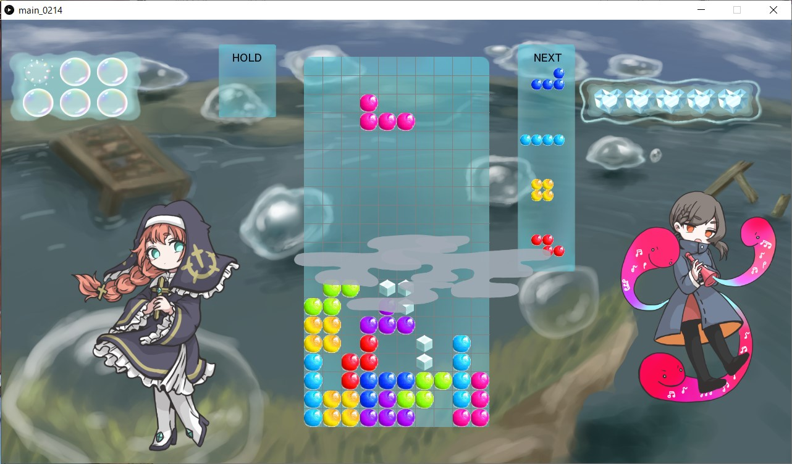
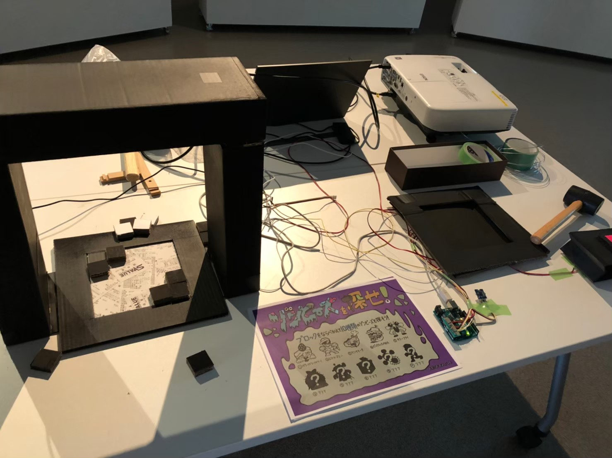
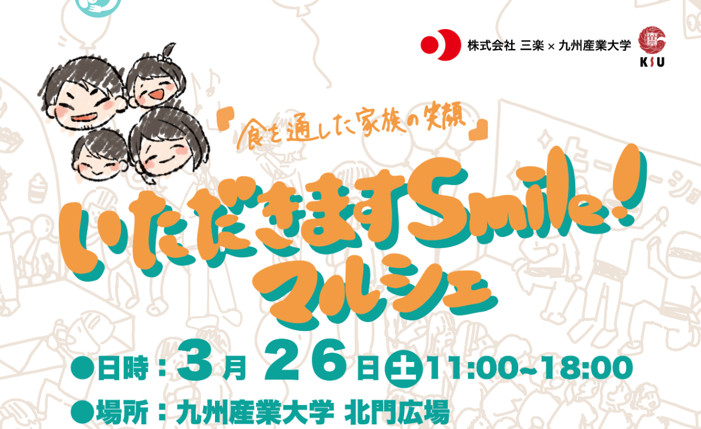

自己紹介
ポートフォリオをご覧頂きありがとうございます。
名前：唐川遥
所属：九州産業大学理工学部情報科学科
趣味：ゲーム制作
https://github.com/
ポートフォリオをご覧頂きありがとうございます。
名前：唐川遥
所属：九州産業大学理工学部情報科学科
趣味：ゲーム制作
https://github.com/
大学生で起きた主要な出来事を時系列に沿って紹介します。
九州産業大学理工学部情報科学科入学
塾講師のバイトを始める
メンバー募集メールを見て「ゲーム作ろうラボ」に参加
プログラマー６人、デザイナー５人のチームに参加し、ゲーム制作を開始
塾講師のバイトで福岡支部高評価ランキング３位に！
チームで作ったゲーム"Magic Water"完成
チーム解散

ノベルゲームを制作するため、プログラマー２人、デザイナー３人(現在)のチームを結成(チーム名：OG3)
チームのリーダーになる
開発時間をもっと取りたいと思い、バイトをやめる
「ゲーム作ろうラボ」運営メンバーになる
「ReProject」というリサイクルをモチーフにした展示会を行うためにデザイナー３人、プログラマー３人でチームを結成
「ReProject」展示 
大学開催される幼稚園生向けマルシェに「ゲーム作ろうラボ」として展示することになる マルシェの広報用ホームページのコーディング担当に
「ゲーム作ろうラボ」全体の代表に立候補
マルシェ開催

代表選挙で演説を行い、約50名の代表に就任
小学生向け知育アプリを作るためのチーム、デザイナー２人、プログラマー３人、シナリオライター１人のチームを結成
インフラ系の研究室に配属される
大学のオープンキャンパスに「ゲーム作ろうラボ」が展示 高校生と保護者に向けてプレゼンを行う
研究室で「HRRC」の一環であるアプリ開発プロジェクトに参加
HRRC:文部科学省「平成26年度私立大学戦略的研究基盤形成事業（2014～2016年度）」により
「独創的ロボット技術により介護支援現場を革新するリハビリ支援ソリューションの実用化展開」として採択されている活動
大学にある展示ホールで、「ゲーム作ろうラボ成果発表展示」を行った。私はこの為に、ARを用いたリアル型脱出ゲームを制作した。
４日間で100人近くの方に来場して頂けた。

今まで作成してきたものをいくつか紹介します。
ジャンル：ノベルゲーム
プラットフォーム：Unity
制作期間：１年半
制作人数(現在)：
プログラマー２人、キャラクターデザイナー１人、UIデザイナー１人
担当箇所：
ノベルのベース部分(文字送り、キャラの表示、名前の表示、スチル部分)
セーブ機能
オート機能
設定画面
移動アニメーション
メニュー画面
スタート画面
ミニゲーム(一種)
ガチャ機能
ギャラリー画面
アルバム機能
ジャンル：落ち物ゲーム
プラットフォーム：processing
制作期間：半年
制作人数：
プログラマー6人、デザイナー5人
担当箇所：
HP
タイム
BGM、SE
キャラクター一覧画面
内容：捨てる予定だったレシートがリサイクルされ、ゾンビが生まれることをコンセプトにした展示を行った。
ゾンビを生み出すために、まずは白い台座の上に黒い正方形のブロックを配置する。次に、センサーの前で手を動かす。
そうすると、配置したブロックがドット絵になり、レシートをつなぎ合わせて作ったスクリーンに投影される。
手の動きに応じて、ドット絵になったブロックが多種多様な動きをする。最後にハンマーでボタンを叩くと、ドット絵となったブロックが崩れ落ち、ゾンビが生まれる。
その生まれたゾンビがアニメーションして終了という流れになっている。
メインプラットフォーム：processing
制作期間：1ヶ月
制作人数：
プログラマー3人、デザイナー3人
担当箇所：
カメラで配置された物を取るアニメーション
ドットが崩れ落ちるアニメーション
配置に応じて出現させるキャラを変更する部分
内容：家族・親子が一緒に楽しめることをコンセプトに｢いただきます！Smileマルシェ｣でARすごろくというARを使ったワークショップを行った。
ARすごろくは、ARマーカーをすごろくのマスにしたゲームで、サイコロを振り、止まったマスのARマーカーをiPadに写すと動物たちと指示が表示される。
現実世界で実行することでAR世界の動物たちがリアクションを起こし、先に進めるようになっている。
ARを用いることで、マスの指示に意味を持たせることができ、よりすごろくの世界を楽しめるようにできた。
メインプラットフォーム：Unity
制作期間：1ヶ月
制作人数：
プログラマー2人、デザイナー1人
担当箇所：
じゃんけん、ランキング機能以外全て
いただきますスマイルマルシェ用HP(コーディングのみ担当)：
使用したことのある言語を表記します(趣味、授業など)。
| Java | 大学の授業でメインに使っている言語。競技プログラミングや、processingでゲーム開発を行う際に使用した。 |
|---|---|
| C# | Unityでのゲーム開発でメインに使っている言語。授業やインターンシップ先でVisual Studioでアプリ開発を行う際に使用した。 |
| HTML＆CSS | 授業でいくつかのWebシステムを作成する際に使用した(学生が学科のグループ分けを行うためのシステムなど)。 また、デザイナーが描いたデザインを元にサイトを２つコーディングした。なお、このサイトは自分でデザインを行いコーディングしている。 |
| PHP | 自分で制作したWebページで使用した。また、授業でWebシステムを作る際にも使用した。 |
| SQL | 授業でWebシステムを作る際に使用した。また、インターンシップ先でも使用した。 |
| その他 | Python,JavaScriptは授業で触っている。 |